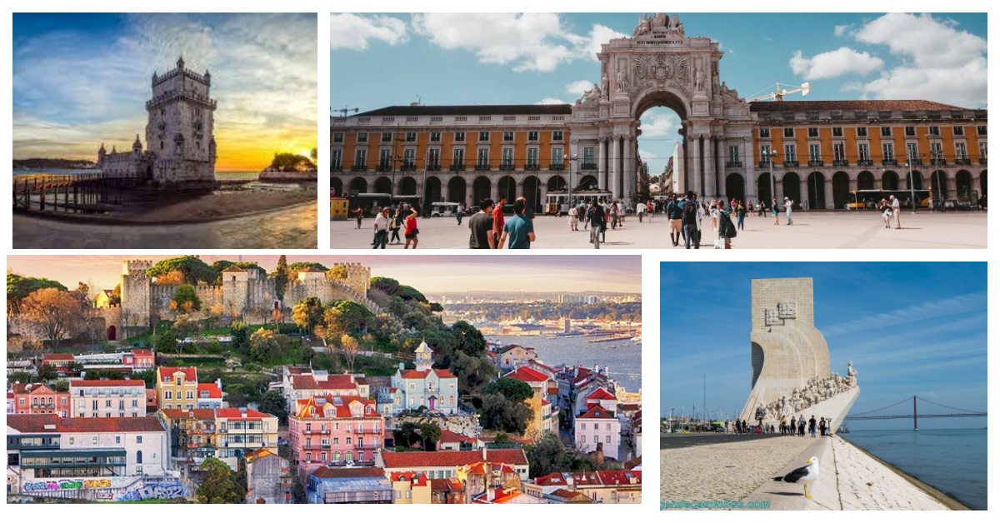

lisboa
Lisboa, a deslumbrante capital de Portugal, é um convite a uma jornada rica em história e beleza. As ruas de paralelepípedos do bairro de Alfama transportam os visitantes ao passado, enquanto a moderna zona do Parque das Nações mostra o lado contemporâneo da cidade. O icônico Castelo de São Jorge oferece vistas panorâmicas deslumbrantes, e a Torre de Belém é um testemunho da era dos Descobrimentos. A vibrante vida noturna no Bairro Alto é inigualável, enquanto os sabores da culinária portuguesa, como os pastéis de nata, encantam o paladar. À beira do rio Tejo, Lisboa mescla tradição e inovação de maneira encantadora, proporcionando uma experiência autêntica e memorável.
